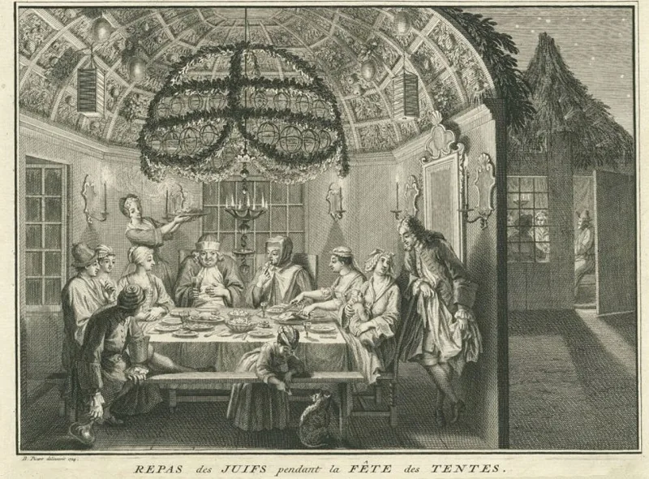

The text settles it — but concede the grievance first, or nothing will be heard.
That you are saved by keeping the rules given at Sinai. The seventh-day Sabbath.
The feasts. The food laws.
Fringes on your clothes. And no Christmas or Easter, which they treat as pagan.
Their real complaint is that mainstream Christianity has used grace to abolish obedience. That complaint is fair, and the church earned it.
Jesus said "If ye love me, keep my commandments." James says faith without works is dead. Those are real texts and they mean what they say.
Not whether obedience matters. Whether it saves.
Galatians 3:10 — "as many as are of the works of the law are under the curse" — and Galatians 5:3, where anyone taking on the law is bound to keep all of it. Paul's argument is not that the law is bad.
It is that it cannot do this job.
If salvation comes by keeping the law, what is the atonement when you fail? There has been no altar since AD 70.
This one has a clear answer from the text. But go slowly here.
Half of what they are saying is right.
"When you break it — and we all do — what covers that?"

Jesus said he came not to destroy the law, and James says faith without works is dead.
Their argument is that mainstream Christianity has used grace to abolish obedience, and that Scripture will not permit it.
Jesus said 'Think not that I am come to destroy the law,' and that not one jot or tittle would pass till all be fulfilled (Matthew 5:17-18). He said 'If ye love me, keep my commandments' (John 14:15). James says faith without works is dead (James 2:17-26). He also says whoever keeps the whole law yet offends in one point is guilty of all (James 2:10). John defines love of God as keeping His commandments, and adds that they are not grievous (1 John 5:3). Revelation twice describes the saints as those who keep the commandments of God and the faith of Jesus (Revelation 12:17; 14:12).
A gospel that produces no obedience, they argue, is the innovation here. Their position is not.
Settled — but go slowly. Half of this lands, and cheap grace is real.
This is where the site should be most careful, because half the critique lands. Cheap grace is a real distortion, and the texts they cite are real texts. Concede that obedience is not optional, and that James means what he says.
Then draw the line the New Testament draws. The question is not whether the redeemed obey. It is whether obedience is the ground of acceptance. Paul answers that in Galatians 3:10 by quoting Deuteronomy 27:26, the doorway to the curse chapter itself.
The logic bites hard in this specific case. The movement uses Deuteronomy 28 to prove it is under the curse, then proposes law-keeping as the remedy. Paul says law-keeping is the very system that administers the curse. James 2 addresses the evidence of living faith, not its basis, and Ephesians 2:8-10 holds both together in three verses.